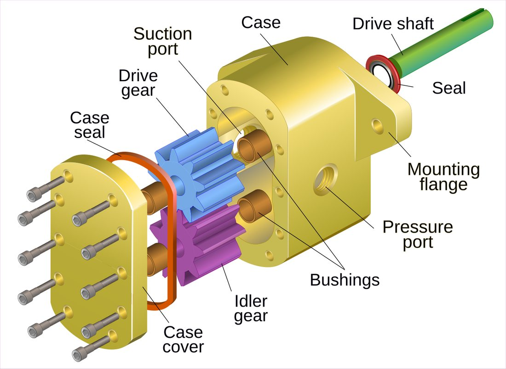
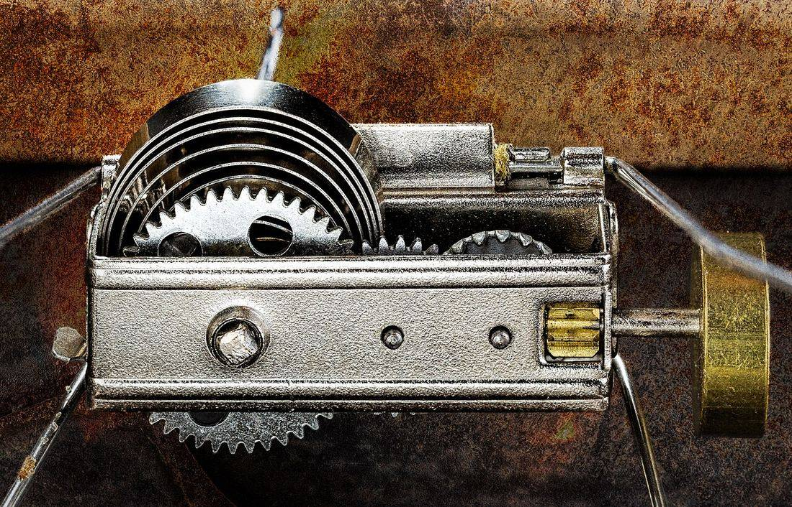
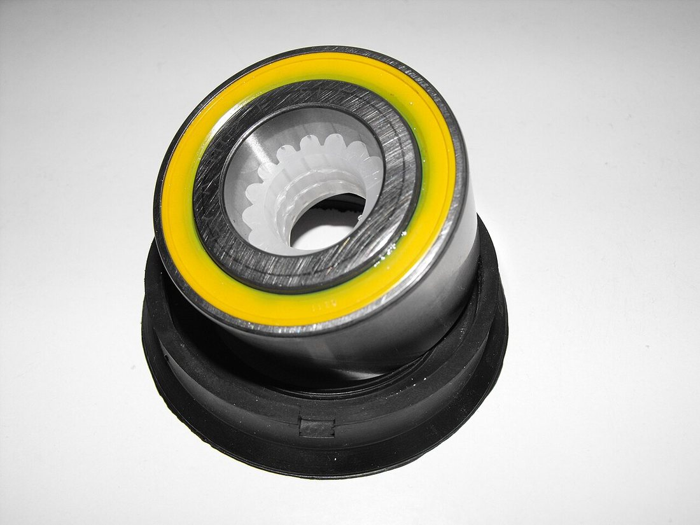
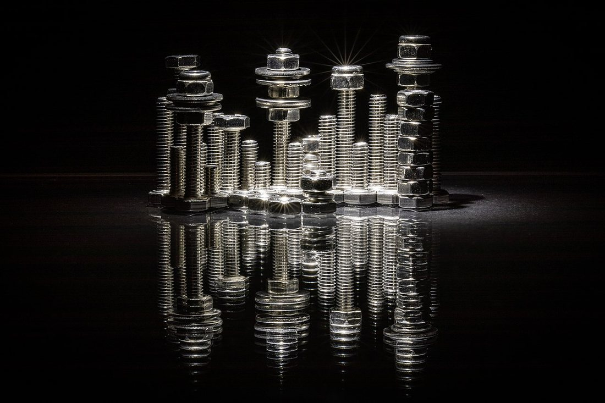

Көркем еңбек (ұлдар) · 4-бөлім · Машина және электротехника Art & Craft (Boys) · Section 4 · Machines & Electrics Художественный труд (мальчики) · Раздел 4 · Машины и электротехника
Құрастыру сызбасы және машина бөлшектері
Assembly Drawing and Machine Parts
Сборочный чертёж и детали машин
Бөлшектер қалай сызбада көрсетіліп, бір тетікке жиналатынын танимыз. How separate parts are drawn and joined into one working mechanism. Как отдельные детали изображают на чертеже и собирают в единый механизм.
Машина бөлшектерден жиналады A machine is built from parts Машина собирается из деталей
Кез келген машина — қайшыдан бастап автомобиль қозғалтқышына дейін — бөлек жасалған бөлшектерден тұрады. Бөлшек дегеніміз — біртұтас материалдан құрама-құраусыз жасалған дайындама (білік, тісті дөңгелек, бұранда). Бірнеше бөлшек қосылып құрама бірлікті (тораптар) құрайды, ал тораптар жиналып машина болады. Әр бөлшектің пішіні мен өлшемі жұмыс сызбасында көрсетіледі, ал олардың бір-бірімен қалай қосылатыны — құрастыру сызбасында. Every machine — from scissors to a car engine — is made of separately produced parts. A part is a single piece made from one material without assembly (a shaft, a gear, a bolt). Several parts joined together form an assembly unit, and units combine into the finished machine. The shape and size of each part are given on its working drawing, while the way they fit together is shown on the assembly drawing. Любая машина — от ножниц до автомобильного двигателя — состоит из отдельно изготовленных деталей. Деталь — это изделие из одного материала, выполненное без сборки (вал, зубчатое колесо, болт). Несколько деталей, соединённых вместе, образуют сборочную единицу (узел), а узлы складываются в машину. Форму и размеры каждой детали задаёт её рабочий чертёж, а то, как они соединяются между собой, показывает сборочный чертёж.

Жұмыс сызбасы мен құрастыру сызбасы Working drawing vs. assembly drawing Рабочий чертёж и сборочный чертёж
Екеуі де ГОСТ ережелері бойынша орындалады, бірақ әртүрлі сұраққа жауап береді: біреуі — бөлшекті қалай жасау керек, екіншісі — оны қалай жинау керек. Both follow the same drafting standards, but answer different questions: one tells you how to make a part, the other how to assemble it. Оба выполняются по единым правилам, но отвечают на разные вопросы: один говорит, как изготовить деталь, другой — как её собрать.
| Признак | Рабочий (детальный) чертёж | Сборочный чертёж |
|---|---|---|
| Что показывает | Одну деталь со всех необходимых сторон | Изделие из нескольких деталей в собранном виде |
| Размеры | Все размеры для изготовления | Только габаритные, установочные и присоединительные |
| Обозначение деталей | Название и материал в основной надписи | Номера позиций на полках-выносках |
| Спецификация | Нет | Обязательна — перечень всех деталей по позициям |
| Для кого | Для токаря, фрезеровщика, слесаря | Для сборщика и контролёра |
| Белгісі | Жұмыс (бөлшек) сызбасы | Құрастыру сызбасы |
|---|---|---|
| Нені көрсетеді | Бір бөлшекті қажетті жақтарынан | Бірнеше бөлшектен жиналған бұйымды |
| Өлшемдер | Жасауға қажетті барлық өлшем | Тек габаритті, орнату және қосу өлшемдері |
| Бөлшектерді белгілеу | Атауы мен материалы негізгі жазуда | Шығару сызықтарындағы позиция нөмірлері |
| Спецификация | Жоқ | Міндетті — позициялар бойынша барлық бөлшек тізімі |
| Кімге арналған | Токарь, фрезерлеуші, слесарьға | Жинаушы мен бақылаушыға |
| Feature | Working (detail) drawing | Assembly drawing |
|---|---|---|
| What it shows | One part from all needed sides | A product of several parts, assembled |
| Dimensions | Every dimension needed to make it | Only overall, mounting and connecting sizes |
| Naming parts | Name and material in the title block | Item numbers on leader lines |
| Parts list | None | Mandatory — a list of all parts by item |
| Who uses it | Turner, miller, fitter | Assembler and inspector |
Құрастыру сызбасын қалай оқу керек How to read an assembly drawing Как читать сборочный чертёж
Негізгі жазуды оқы: бұйымның атауын, масштабын және белгісін біл. Read the title block: learn the product's name, scale and code. Прочитай основную надпись: узнай название изделия, масштаб и обозначение.
Спецификацияны қара — онда барлық бөлшек позиция нөмірімен тізілген. Check the parts list — every part is listed there with an item number. Посмотри спецификацию — в ней перечислены все детали с номерами позиций.
Позиция нөмірлерін шығару сызықтары арқылы суреттегі бөлшектермен сәйкестендір. Match the item numbers, through leader lines, to the parts on the picture. Сопоставь номера позиций по линиям-выноскам с деталями на изображении.
Тіліктер (разрездер) арқылы бөлшектердің ішкі қосылыстарын түсін. Use the section views to understand the internal connections of parts. По разрезам разберись во внутренних соединениях деталей.
Қосылыс түрін анықта: бұрандалы, кілтекті, дәнекерленген немесе тойтармалы. Identify the joint type: threaded, keyed, welded or riveted. Определи вид соединения: резьбовое, шпоночное, сварное или заклёпочное.
Жинау ретін ойша құр: қай бөлшекті алдымен, қайсысын соңында орнатады. Plan the assembly order in your head: which part goes in first, which last. Мысленно выстрой порядок сборки: какую деталь ставят первой, какую последней.
Машина бөлшектерінің негізгі топтары Main groups of machine parts Основные группы деталей машин
Тісті дөңгелектер, шкивтер, біліктер — қозғалыс пен күшті береді. Gears, pulleys, shafts — they transmit motion and force. Зубчатые колёса, шкивы, валы — передают движение и усилие.
Бұрандалар, гайкалар, шайбалар, тойтармалар — бөлшектерді ұстап тұрады. Bolts, nuts, washers, rivets — they hold parts together. Болты, гайки, шайбы, заклёпки — соединяют детали.
Мойынтіректер мен төлкелер айналмалы білікті ұстайды. Bearings and bushings support a rotating shaft. Подшипники и втулки поддерживают вращающийся вал.
Корпус, қақпақ, станина — басқа бөлшектерге орын береді. Case, cover, frame — they house and align the other parts. Корпус, крышка, станина — вмещают и базируют другие детали.
Нақты бөлшектер — суретке басып үлкейт Real parts — tap a photo to enlarge Настоящие детали — нажми на фото, чтобы увеличить



Есте сақта Remember Запомни
Әр бөлшекке сызбада жеке позиция нөмірі беріледі. Every part gets its own item number on the drawing. Каждой детали на чертеже присваивают свой номер позиции.
Спецификация — құрастыру сызбасының міндетті серігі. A parts list is a mandatory companion to the assembly drawing. Спецификация — обязательный спутник сборочного чертежа.
Тіліктер бөлшектердің ішкі қосылысын ашып көрсетеді. Section views reveal the internal joints between parts. Разрезы раскрывают внутренние соединения деталей.